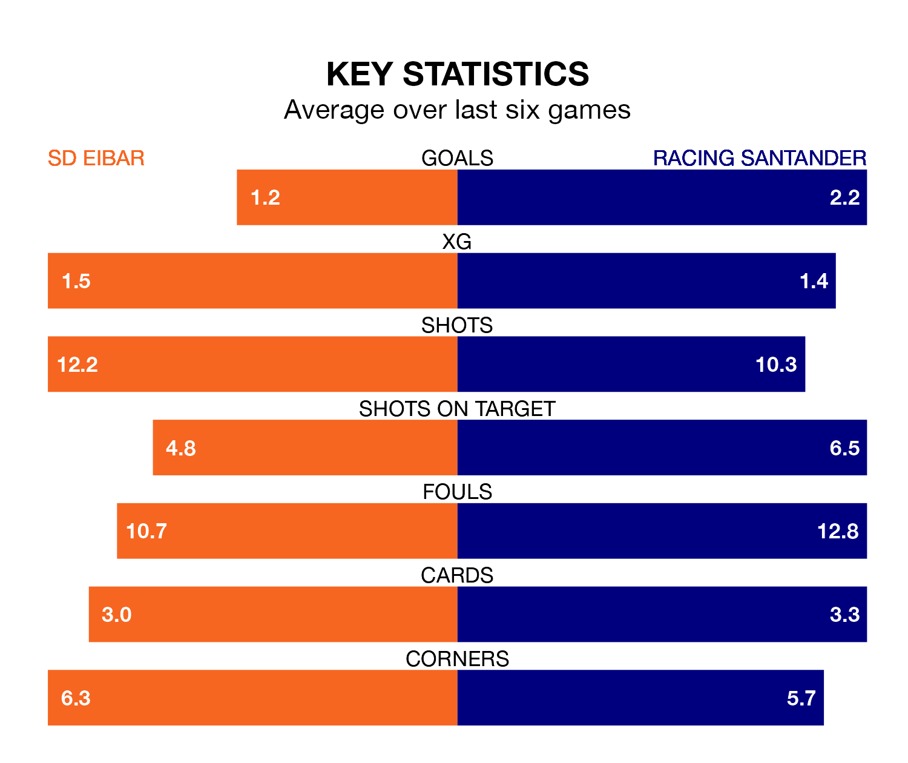

Friday's late match between SD Eibar and Racing Santander promises to be one for the neutrals, as two of the Segunda División's most free-scoring sides go head-to-head.
Ahead of the game at Estadio Municipal de Ipurúa, Eibar and Racing sit joint-second and top in the goal-scoring charts, with 34 and 36 goals respectively.
Striker Juan Carlos Arana Gómez leads the way for the home side, having bagged eight goals in their 21 games to date.
And Gerard Fernández Castellano has been the main man in the opponents' penalty box for Racing, with 10 goals.
Racing's Iñigo Vicente Elordoy is the league's most creative player, racking up nine assists in 21 appearances so far this season.
For Eibar, Juan Diego Molina Martínez has set up the most goals, having laid on four assists in 19 games.
The hosts are in disappointing form in the Segunda División, with one win and two draws from their last six games.
With three wins and three draws over that period, the away team's form is much better – they have taken 12 points from 18, compared to Eibar's five.
Racing are sixth in the table after 21 games, of which they have won nine and drawn six, earning 33 points.
Eibar are one place behind Racing in seventh, with nine wins and five draws putting them on 32 points.
Eibar's last match was on December 20, a 1-1 draw against Sporting Gijón, with Ager Aketxe Barrutia getting the goal for Eibar.
Racing beat FC Andorra 2-0 last time out, on December 19, with Rubén González Alves and Vicente Elordoy on the scoresheet.
Updated: 13:38 (UTC), 10/01/24